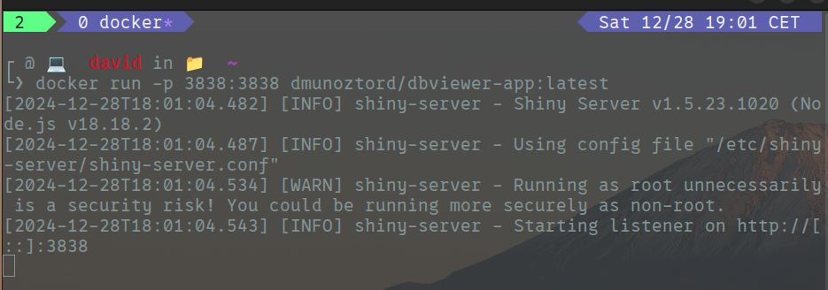
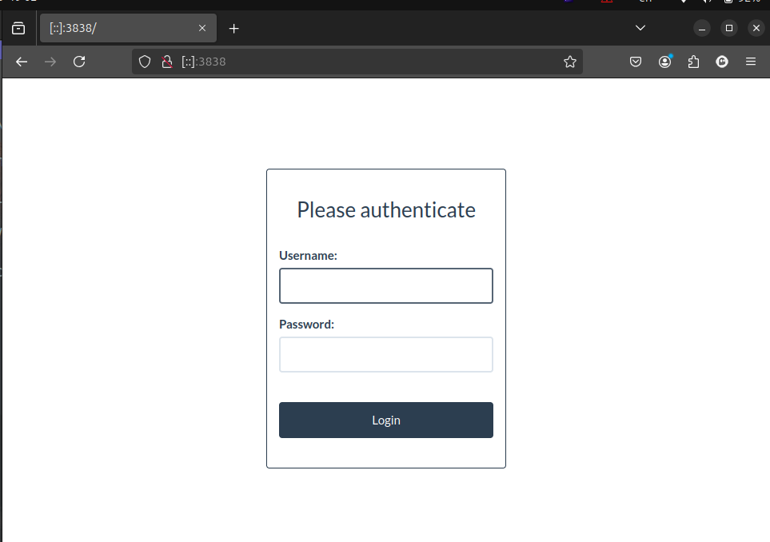

What in the hell is he talking about?

Docker is a powerful tool that allows you to package your applications into containers, making them portable and easy to deploy. In this post, we’ll explore how to Dockerize a Shiny app, creating an isolated environment for each project and ensuring that your app runs smoothly in any environment. We’ll walk through two approaches for Dockerizing a Shiny app and deploying it on AWS Fargate using EKS, providing a production-ready setup with proper monitoring, scaling, and security measures in place. Let’s get started!
The Challenge
When you’re working with multiple projects, especially ones that require different versions of R packages or libraries (like in DbVieweR Project.), the last thing you want is to muddle up your environment. You need clear separation for each project, and this is where Docker comes in, providing an isolated environment that guarantees that each project runs in its own container with its own dependencies.
Shiny and Docker: A Perfect Match
In this post, we’ll walk through the steps to Dockerize any shiny app and deploy it in a containerized environment, creating separate instances for different databases or applications that you may be working on. With Docker, we can avoid dependency conflicts, streamline deployments, and ensure that our environment is as reproducible as possible.
Dockerizing DbVieweR: Two Approaches for Isolation
Let’s explore two approaches for Dockerizing DbVieweR—one based on using a custom environment with renv (the traditional method) and another using Docker’s complete containerization capabilities.
1. Dockerizing with renv for Dependency Management
Using renv inside a Docker container can be useful if you want to maintain control over the R environment and packages. Here’s how:
# Use an official R image as the base
FROM rocker/shiny
# Install necessary system dependencies
RUN apt-get update && apt-get install -y \
libcurl4-openssl-dev \
libssl-dev \
libxml2-dev \
&& rm -rf /var/lib/apt/lists/*
# Install necessary R packages
RUN R -e "install.packages(c('renv', 'DBI', 'RPostgreSQL'))"
# Set up the working directory
WORKDIR /srv/shiny-server
# Copy the app and renv.lock (if you have it)
COPY . .
# Restore the R environment using renv
RUN R -e "renv::restore()"
# Expose port 3838 for the Shiny app
EXPOSE 3838
# Run the Shiny app
CMD ["R", "-e", "shiny::runApp('/srv/shiny-server')"]Key Notes: - We use rocker/shiny as our base image consistently - System dependencies are installed for various R packages - Essential R packages are installed - App files and renv.lock are copied into the container - Environment is replicated using renv::restore()
2. Dockerizing with Full Containerization
# Use an official R image as the base here we use shiny
FROM rocker/shiny
# Install necessary system dependencies for DB and app
RUN apt-get update && apt-get install -y \
libcurl4-openssl-dev \
libssl-dev \
libxml2-dev \
libsqlite3-dev \
&& rm -rf /var/lib/apt/lists/*
# Install R packages required for the app
RUN R -e "install.packages(c('shiny', 'DBI', 'RPostgreSQL'))"
# Set up the working directory
WORKDIR /srv/shiny-server
# Copy the app's source code into the container
COPY . .
# Expose port for the Shiny app
EXPOSE 3838
# Run the Shiny app
CMD ["R", "-e", "shiny::runApp('/srv/shiny-server')"]Why Docker for DbVieweR?
For DbVieweR, Docker provides: 1. Consistency: Your app behaves the same way everywhere 2. Isolation: Each project gets its own instance 3. Portability: Deploy anywhere without code changes 4. Reproducibility: Easy environment replication
Deployment Process
1. Build and Push Initial Image
2. Create Custom Dockerfile
# Use the custom DbVieweR image from Docker Hub
FROM your-dockerhub-username/app-name:latest
# Set the working directory
WORKDIR /srv/shiny-server
# Copy the Shiny app
COPY ./your-shiny-app-directory /srv/shiny-server/
# Expose Shiny port
EXPOSE 3838
# Set environment variables
ENV SHINY_PORT=3838
# Run Shiny server
CMD ["/usr/bin/shiny-server"]3. Local Development Setup (docker-compose.yml)
version: '3.8'
services:
shiny-app:
build: .
ports:
- "3838:3838"
environment:
- SHINY_PORT=3838
volumes:
- ./app:/srv/shiny-server
networks:
- shiny-net
networks:
shiny-net:
driver: bridgeFrom now on, you can run your Shiny app locally using :
 You then just have to open your browser on http://[::]:3838

4 (Advanced). EKS Cluster Configuration (cluster.yaml)
Now let’s deploy our Shiny app on AWS Fargate using EKS. Here’s a sample. This is useful if you want to run your app in a production environment.
5 (Advanced). Kubernetes Deployment (deployment.yaml)
Kubernetes is a powerful tool for managing containerized applications. Here’s a sample deployment configuration for your Shiny app:
apiVersion: apps/v1
kind: Deployment
metadata:
name: shiny-deployment
namespace: shiny-namespace
spec:
replicas: 2
selector:
matchLabels:
app: shiny-app
template:
metadata:
labels:
app: shiny-app
spec:
containers:
- name: shiny-container
image: your-dockerhub-username/dbviewer-shiny-app:latest
ports:
- containerPort: 3838
resources:
requests:
memory: "512Mi"
cpu: "250m"
limits:
memory: "1Gi"
cpu: "500m"
readinessProbe:
httpGet:
path: /
port: 3838
initialDelaySeconds: 30
periodSeconds: 106 (Advanced). Service Configuration (service.yaml)
Finally, create a service configuration to expose your Shiny app to the outside world:
apiVersion: v1
kind: Service
metadata:
name: shiny-service
namespace: shiny-namespace
spec:
type: LoadBalancer
ports:
- port: 80
targetPort: 3838
protocol: TCP
selector:
app: shiny-appFor EKS deployment:
Key Features of This Setup
- Resource Management
- Explicit CPU and memory limits
- Controlled scaling capabilities
- Health Monitoring
- Readiness probes
- Container health checks
- Networking
- Load balancer configuration
- Port mapping
- Network isolation
- Security
- Namespace isolation
- Resource constraints
- Network policies
This configuration provides a production-ready setup for running your Shiny app on AWS Fargate with proper monitoring, scaling, and security measures in place !